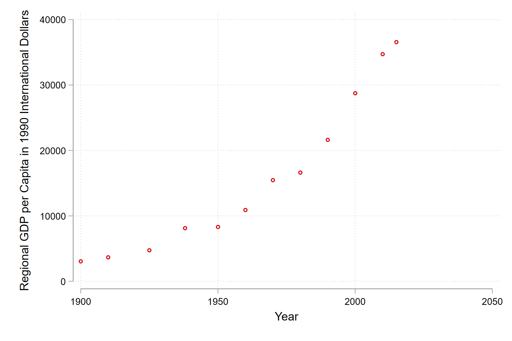
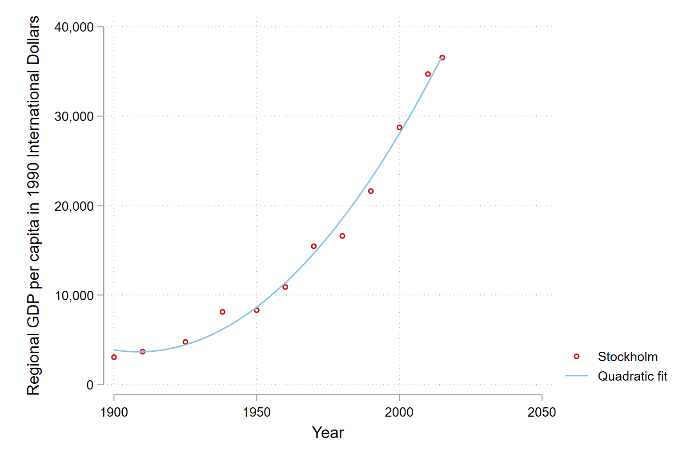
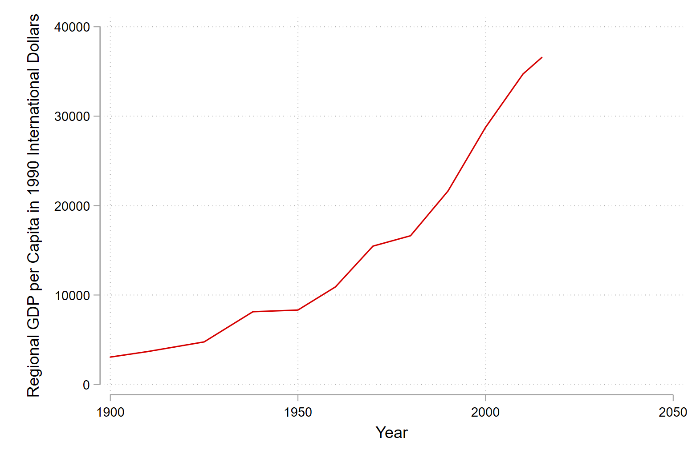
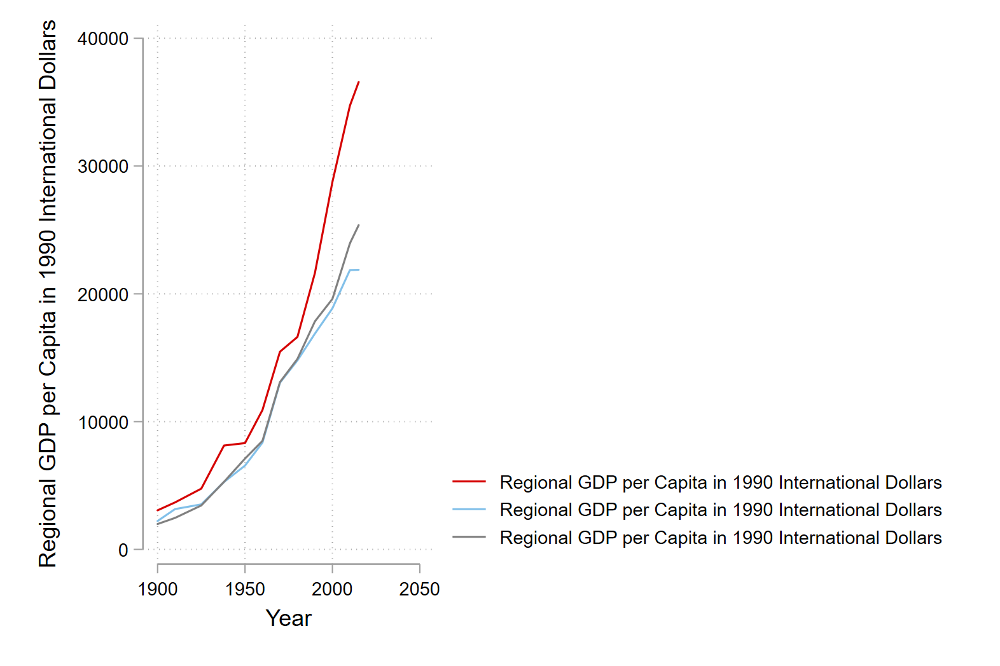
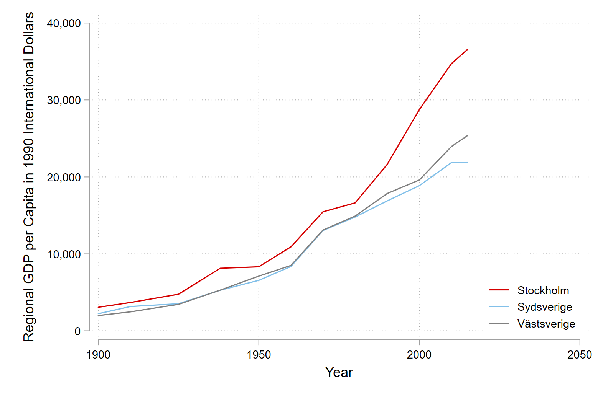
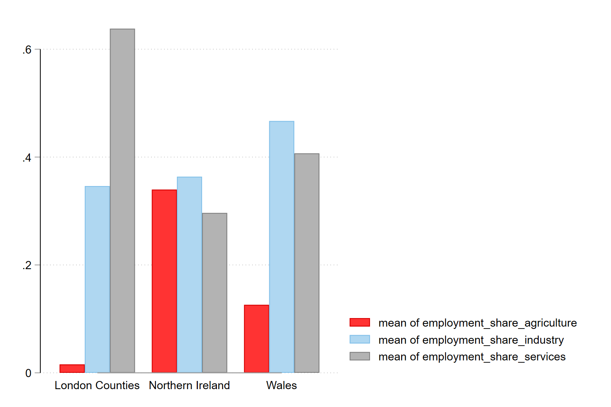
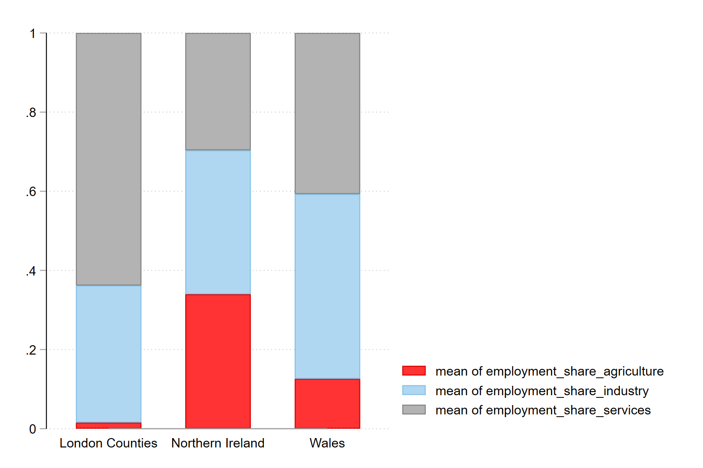
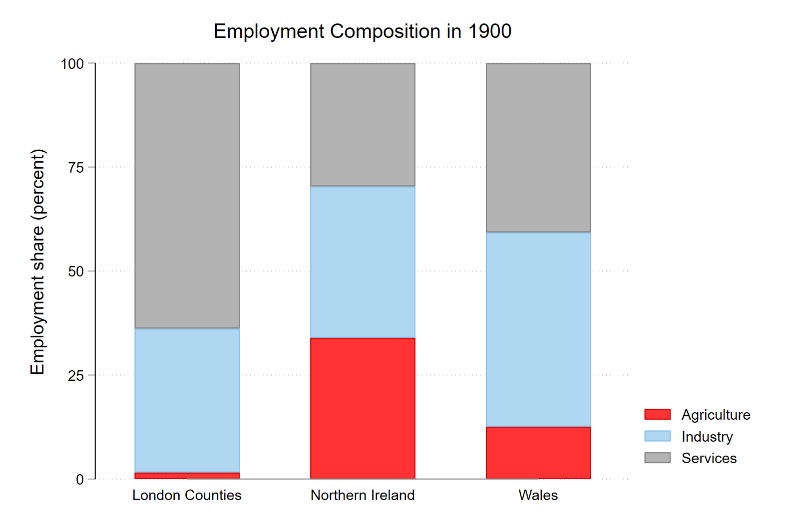
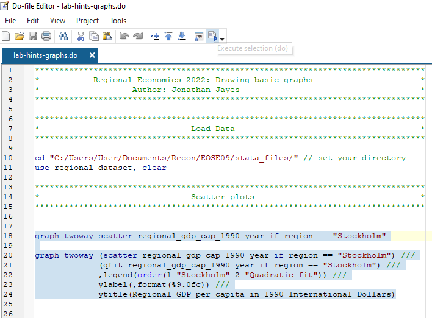

cd "C:/Users/User/Documents/Recon/EOSE09/stata_files/" # set your directory
use regional_dataset, clearStata Lab Hints: Basic Graphs
Intro
For your projects (📅 due March 1st), you can use any kind of plots in addition to the maps we have learned to draw in the first lab.
In this little note, I take you through drawing scatter plots, line plots and bar plots.
I have taken inspiration from Germán Rodríguez’ notes.
Graphing
Let’s get started!
Load data
As before we will use the regional_dataset.dta file saved in our working directories.
Scatter plots
Scatterplots show the extent of correlation between two variables (on the x- and y-axes). Including colour and shaped markers can allow us to compare groups of data.
We can draw a basic scatter plot in stata:
graph twoway scatter regional_gdp_cap_1990 year if region == "Stockholm"
We can add a line of best fit with a quadratic curve by using the qfit or quadratic fit command. Notice that we are layering two plots on one set of axes (the scatter plot and the line of best fit) with the twoway command. In addition we add some labels and format the y-axis.
graph twoway (scatter regional_gdp_cap_1990 year if region == "Stockholm") ///
(qfit regional_gdp_cap_1990 year if region == "Stockholm") ///
,legend(order(1 "Stockholm" 2 "Quadratic fit")) ///
ylabel(,format(%9.0fc)) ///
ytitle(Regional GDP per capita in 1990 International Dollars)
Line plots
Line plots are great for showing trends over time.
We can draw a basic line plot with the line command in Stata:
line regional_gdp_cap_1990 year if region == "Stockholm" 
Again we can use the twoway command to plot different regions on our line plot. The legend provided by Stata is not super helpful, either in its information or placement.
graph twoway (line regional_gdp_cap_1990 year if region == "Stockholm") ///
(line regional_gdp_cap_1990 year if region == "Sydsverige") ///
(line regional_gdp_cap_1990 year if region == "Västsverige")
We can change that by specifying labels in our legend with the legend option and placement with the pos option.
graph twoway (line regional_gdp_cap_1990 year if region == "Stockholm") ///
(line regional_gdp_cap_1990 year if region == "Sydsverige") ///
(line regional_gdp_cap_1990 year if region == "Västsverige") ///
,legend(order(1 "Stockholm" 2 "Sydsverige" 3 "Västsverige") ///
ring(0) pos(5)) ylabel(,format(%9.0fc))
Bar plots
Bar plots are a great way to show compaisons between groups.
First we create a variable to select three regions in our plot with the gen command:
gen include_in_bar = .
replace include_in_bar = 1 if region == "London Counties" | region == "Wales" | region == "Northern Ireland" Then we can draw a basic bar graph. Here the variables we want to compare are named before the if command specifies which segment of the data we want to use. The over option tells Stata that we want to use of bar graph to compare different regions.
graph bar employment_share_agriculture employment_share_industry ///
employment_share_services if include_in_bar == 1 & year == 1900 ///
,over(region) 
We can turn this into a stacked bar graph that makes it easier to compare the proportions between regions (as by definition they must sum to 100 percent) with the stack option.
graph bar employment_share_agriculture employment_share_industry ///
employment_share_services if include_in_bar == 1 & year == 1900 ///
,over(region) stack 
Finally we can add some nice labels, a y-axis that makes sense and a title:
graph bar employment_share_agriculture employment_share_industry ///
employment_share_services if include_in_bar == 1 & year == 1900 ///
,over(region) stack title(Employment Composition in 1900) ///
legend(order(1 "Agriculture" 2 "Industry" 3 "Services")) ///
ylab(0 "0" .25 "25" .5 "50" .75 "75" 1 "100") ///
ytitle("Employment share (percent)")
I hope that this is useful!
Tip on executing code in .do files
To execute a command in Stata you can highlight the code and then run it with the execute section button, or click ctrl + d on windows or cmd + d on mac.

If you choose to copy the code from the .do file into the console, you need to remove the linebreak indicators (///) which tell Stata that the code line continues after the break.